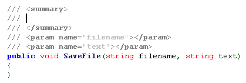
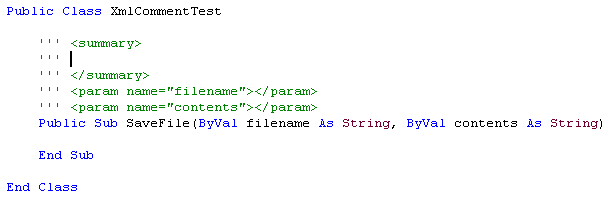
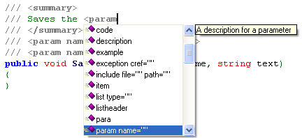
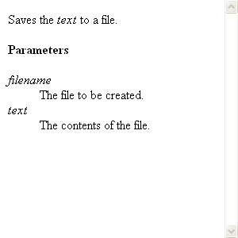
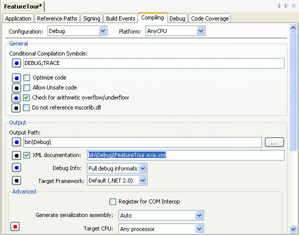
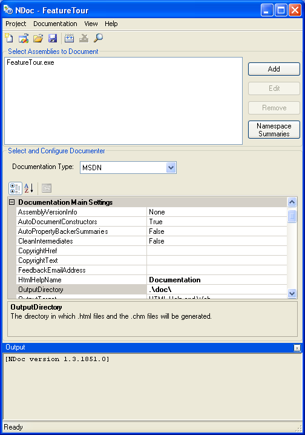

SharpDevelop has support for adding and previewing XML documentation comments in C# and VB.NET code. It also ships with NDoc so you can generate your help file directly from the development environment.
In a C# source file, typing in /// before a method will start an XML comment and SharpDevelop will generate a basic comment based on the method parameters and return value.

In VB.NET an XML comment starts with '''.

As you type SharpDevelop provides XML element completion inside the comment.

With the cursor inside the comment, from the Tools menu select Quick XML doc, or alternatively use the keyboard shortcut Ctrl+Q. This opens up a window showing you a preview of the XML comment.

By default the compiler does not generate XML comment documentation, to turn this on, select the name of the project in the Project Explorer, right click and select Properties. The project options are then opened. Select the Compiling tab and enable the XML comment generation by ticking the XML documentation check box.

XML comment documentation will then be generated from the code when the project is compiled. Once compilation is complete you can use NDoc to generate help documentation. From the Project menu, select Build documentation with NDoc.
This runs the NDoc application where you can generate various types of documentation, such as MSDN-style HTML Help format (.chm), Visual Studio .NET Help format (HTML Help 2), and MSDN style web pages.
